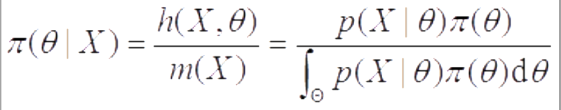

点估计的概念与无偏性
(1)定义：设x1，…，xn是来自总体的一个样本，用于估计未知参数θ的统计量θ(∧)＝θ(∧)（x1，…，xn）称为θ的估计量，或称为θ的点估计，简称估计．
(2)定义：设θ(∧)＝θ(∧)（x1，…，xn）是θ的一个估计，θ的参数空间为Θ，若对任意的θ∈Θ，有Eθ（θ(∧)）＝θ，则称θ(∧)是θ的无偏估计，否则称为有偏估计．
注意：
①当样本量趋于无穷时，有E（sn2）→σ2，称sn2为σ2的渐近无偏估计，这表明当样本量较大时，sn2可近似看作σ2的无偏估计．
②若对sn2作如下修正：
则s2是总体方差的无偏估计．这个量常被采用．
③无偏性不具有不变性．即若θ(∧)是θ的无偏估计，一般而言，其函数g（θ(∧)）不是g（θ）的无偏估计，除非g（θ）是θ的线性函数．
④并不是所有的参数都存在无偏估计，当参数存在无偏估计时，我们称该参数是可估的，否则称它是不可估的．
矩估计及相合性
替换原理和矩法估计
替换原理指：
（1）用样本矩去替换总体矩，这里的矩可以是原点矩也可以是中心矩．
（2）用样本矩的函数去替换相应的总体矩的函数．2概率函数已知时未知参数的矩估计设总体具有已知的概率函数p（x；θ1，…，θk），（θ1，…，θk）∈Θ是未知参数或参数向量，x1，…，xn是样本．假定总体的k阶原点矩uk存在，则对所有的j（0＜j＜k）uj都存在，若假设θ1，…，θk能够表示成u1，…，uk的函数θj＝θj（u1，…，uk），则可给出θj的矩估计：θ(∧)j＝θj（a1，…，ak），j＝1，…，k，其中a1，…，ak是前k阶样本原点矩
 进一步，如果我们要估计θ1，…，θk的函数η＝g（θ1，…，θ(∧)k），则可直接得到η的矩估计η(∧)＝g（θ(∧)1，…，θ(∧)k）．
进一步，如果我们要估计θ1，…，θk的函数η＝g（θ1，…，θ(∧)k），则可直接得到η的矩估计η(∧)＝g（θ(∧)1，…，θ(∧)k）．
注：当k＝1时，我们通常可以由样本均值出发对未知参数进行估计；如果k＝2，我们可以由一阶、二阶原点矩（或二阶中心矩）出发估计未知参数．
最大似然估计
定义：设总体的概率函数为P（x；θ），θ∈Θ，其中θ是一个未知参数或几个未知参数组成的参数向量，Θ是参数空间，x1，…，xn是来自该总体的样本，将样本的联合概率函数看成θ的函数，用L（θ；x1，…，xn）表示，简记为L（θ），
L（θ）＝L（θ；x1，…，xn）＝p（x1；θ）p（x2；θ）…p（xn；θ）
L（θ）称为样本的似然函数．如果某统计量θ(∧)＝θ(∧)（x1，…，xn）满足
则称θ(∧)是θ的最大似然估计，简记为MLE．注意：在做题时，习惯于由lnL（θ）出发寻找θ的最大似然估计，再求导，计算极值．但在有些场合用求导就没用，此时就需要从取值范围中的最大值和最小值来入手．
最小方差无偏估计
1)均方误差
（1）使用条件：小样本，有偏估计．
（2）均方误差为：MSE（θ(∧)）＝E（θ(∧)－θ）2，常用来评价点估计．将均方误差进行如下分解：
MSE（θ(∧)）＝E[（θ(∧)－Eθ(∧)）＋（Eθ(∧)－θ）]^2＝E（θ(∧)－Eθ(∧)^2＋（Eθ(∧)－θ^2＋2E[（θ(∧)－Eθ(∧)）（Eθ(∧)－θ）]＝Var（θ(∧)）＋（Eθ(∧)－θ）^2
由分解式可以看出均方误差是由点估计的方差与偏差|Eθ(∧)－θ|的平方两部分组成．如果θ(∧)是θ的无偏估计，则MSE（θ(∧)）＝Var（θ(∧)）．
2)一致最小方差无偏估计
定义：设θ(∧)是θ的一个无偏估计，如果对另外任意一个θ的无偏估计θ(~)．在参数率间Θ上都有Var（θ(∧)）≤Var（θ(~)），则称θ(∧)是θ的一致最小方差无偏估计，简记为UMVUE．
关于UMVUE，有如下一个判断准则：
设X＝（x1，…，xn）是来自某总体的一个样本，θ(∧)＝θ(∧)（X）是θ的一个无偏估计，Var（θ(∧)）＜∞，则θ(∧)是θ的UMVUE的充要条件是：对任意一个满足E（φ（X））＝0和Var（φ（X））＜∞的φ（X）都有Covθ（θ(∧)，φ）＝0，∀θ∈Θ．
这个定理表明UMVUE的重要特征是：θ的最小方差无偏估计必与任一零的无偏估计不相关，反之亦然．
贝叶斯估计
1)统计推断的基础
（1）总体信息：总体分布或总体所属分布族提供的信息；
（2）样本信息：抽取样本所得观测值提供的信息；
（3）先验信息：抽样（试验）之前有关统计问题的一些信息．
2)贝叶斯公式的密度函数形式
如图：

3)贝叶斯估计
由后验分布π（θ|X）估计θ有三种常用的方法：
（1）使用后验分布的密度函数最大值点作为θ的点估计的最大后验估计；
（2）使用后验分布的中位数作为θ的点估计的后验中位数估计；
（3）使用后验分布的均值作为θ的点估计的后验期望估计．用得最多的是后验期望估计，它一般也简称为贝叶斯估计，记为θ(∧)B．
4)共轭先验分布
定义：设θ是总体分布p（x；θ）中的参数，π（θ）是其先验分布，若对任意来自p（x；θ）的样本观测值得到的后验分布π（θ|X）与π（θ）属于同一个分布族，则称该分布族是θ的共轭先验分布（族）．
区间估计
区间估计的概念
（1）设θ是总体的一个参数，其参数空间为Θ，x1，x2，…，xn是来自该总体的样本，对给定的一个α（0＜α＜1），假设有两个统计量θ(∧)L＝θ(∧)L（x1，x2，…，xn）和θ(∧)U＝θ(∧)U（x1，x2，…，xn）．若对任意的θ∈Θ有Pθ（θ(∧)L≤θ≤θ(∧)U）≥1－α，则称随机区间[θ(∧)L，θ(∧)U]为θ的置信水平为1－α的置信区间，或简称[θ(∧)L，θ(∧)U]是θ的1－α置信区间，θ(∧)L和θ(∧)U分别称为θ的（双侧）置信下限和置信上限．
（2）如对给定的α（0＜α＜1）对任意的θ∈Θ有P（θ(∧)L≤θ≤θ(∧)U）＝1－α，则称[θ(∧)L，θ(∧)U]为θ能1－α同等置信区间．
（3）设θ(∧)L＝θ(∧)L（x1，…，xn）是统计量，对给定的α∈（0，1）和任意的θ∈Θ有Pθ（θ(∧)L≤θ）≥1－α，∀θ∈Θ，则称θ(∧)L为θ的置信水平为1－α的（单侧）置信下限．假如等号对一切θ∈Θ成立，则称θ(∧)L为θ的1－α同等置信下限．
（4）设θ(∧)U＝θ(∧)U（x1，x2，…，xn）是统计量，对给定的α∈（0，1）和任意的θ∈Θ有Pθ（θ(∧)U≥θ）≥1－α，则称θ(∧)U为θ的置信水平为1－α的（单侧）置信上限．若等号对一切θ∈Θ成立，则称θ(∧)U为θ的1－α同等置信上限．